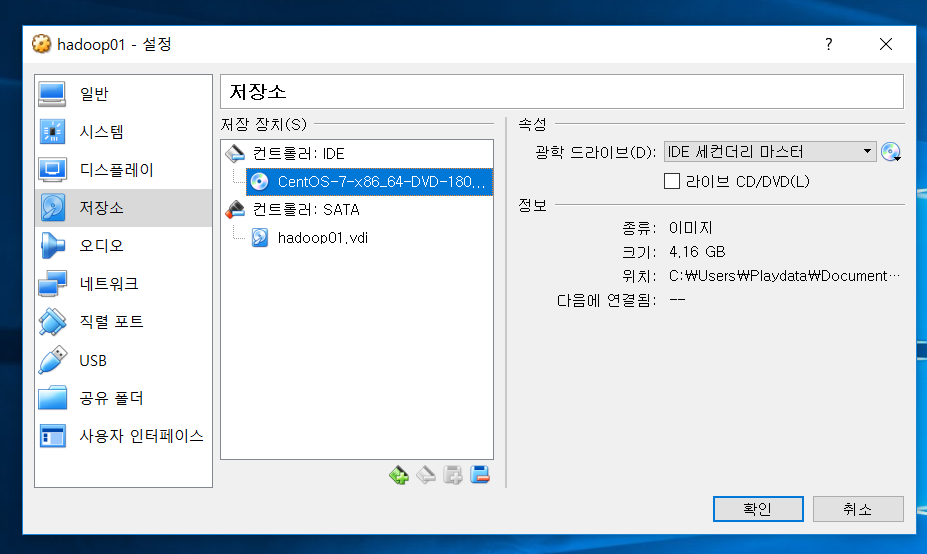
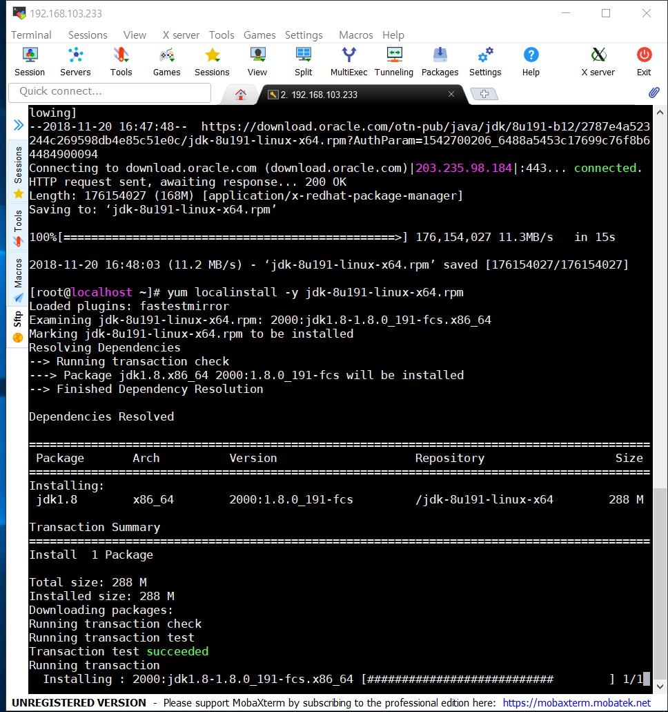
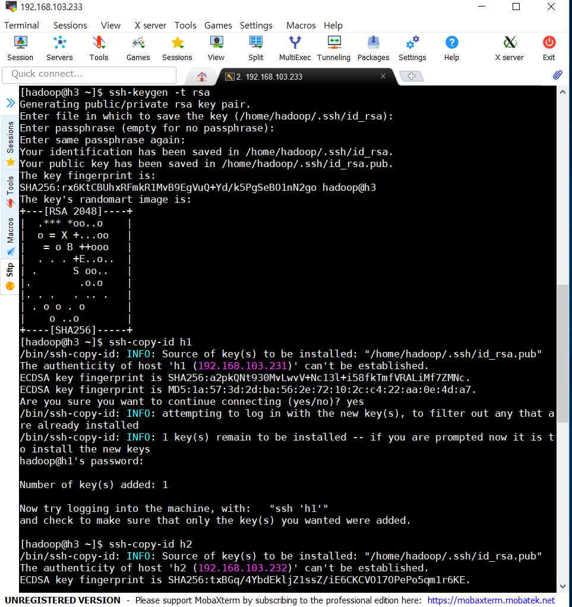

Hadoop 설치하기
1. 가상머신 설치하기
1. 운영체제 종류를 Linux, 버전을 Red Hat(64-bit)로 설정해 줍니다
2. 메모리 크기는 6144mb로 입력하고 만들기 버튼을 누릅니다.
3. disk size를 64GB로 설정합니다.
4. 가상머신 실행 전, 마우스 오른쪽 클릭->설정 버튼을 누릅니다.
5. 좌측 목록에서 시스템 클릭 후 프로세서 탭에서 CPU개수를 2개로 설정합니다.
6. 좌측 목록에서 저장소에서 컨트롤러:IDE 비어있음을 CentOS7로 바꿔줍니다.

7. 좌측 목록에서 네트워크 클릭 후 어댑터2 탭에서 다음과 같이 설정해 줍니다.
8. Install CentOS7 을 클릭해 설치해 줍니다.
9. 한국어 클릭 -> 계속진행

10. 다음과 같이 창이 뜨고, 여기서 자동 파티션 설정과 네트워크 및 호스트명을 클릭할 것입니다.
11. 자동 파티션 설정을 클릭하고 들어와서 파티션을 설정합니다 클릭 완료를 누릅니다.
12. + 버튼을 눌러 다음 화면과 같이 파티션을 설정해 줍니다.
13. 네트워크&호스트 이름에 들어가 이더넷 상태를 모두 켬으로 해주고, 완료를 누릅니다.
14. 설치를 시작하고 root 사용자의 암호를 설정해 줍니다.
15. 설치를 기다립니다.
16. 설치가 완료되면 재부팅 버튼을 누르고 root계정으로 로그인 합니다.
17. pwd로 현재 경로를 확인하고 ls로 파일 및 디렉토리를 확인합니다.
# anaconda파일은 저자의 개인 PC 설정에 따른 것임으로 없어도 무방합니다.
2. 네트워크 설정하기
1. ifconfig로 network를 확인합니다.

2. ifconfig command를 찾을 수 없으면
#yum install net-tools -y 로 설치합니다.

3. 설치가 완료 되면,
#cd /etc/sysconfig/network-scripts/
#ls

4. #vi ifcfg-enp08 로 접속합니다.

5. 위 편집창을 아래와 같이 변경합니다.

6. #service network restart

7. ifconfig 고정된 네트워크를 확인합니다!

3. 자바 설치하기
1. MobaXterm으로 접속,
#yum install wget -y
2. wget 명령어로 자바압축파일을 받습니다.
3. 설치가 완료 되면,
#yum localinstall 0y jdk-8u191-linux-x64.rpm

4. #rm jdk-8u191-linux-x64
# cd /etc/proflie.d/
5. #vi java.sh 아래의 내용을 입력합니다.
export JAVA_HOME=/usr/java/jdk1.8.0_191-amd64
export JRE_HOME=/usr/java/jdk1.8.0_191-amd64/jre
export CLASSPATH=$JAVA_HOME/lib:.
export PATH=$PATH:$JAVA_HOME/bin
6. ctrl+d로 logout 후 다시 로그인 해 java -version 확인
4. host 그룹 생성하기
1. 아래와 같이 hadoop그룹 생성, host 추가하고 ping으로 확인해줍니다.
sudo groupadd hadoop
sudo useradd -d /home/hadoop -g hadoop hadoop
sudo passwd hadoop
echo '192.168.103.231 h1' >> /etc/hosts
echo '192.168.103.232 h2' >> /etc/hosts
echo '192.168.103.233 h3' >> /etc/hosts
echo '192.168.103.234 h4' >> /etc/hosts
ping h1, ping h2, ping h3, ping h4로 확인
5. SSH keygen 생성하기
1. 하둡계정으로 이동해서 키젠 생성후, 각 계정으로 복사해 줍니다.
#su - hadoop
#ssh-keygen -t rsa
#ssh-copy-id h1
#ssh-copy-id h2
#ssh-copy-id h3
#ssh-copy-id h4

6. 하둡 설치하기
1. wget 으로 하둡 압축 파일을 받아와서 압축 해제

2. 압축파일 삭제해주고, chmod775로 권한 변경
3. vi ~/.bashrc 접속
4. 아래 내용 삽입
export HADOOP_HOME=/home/hadoop/hadoop-2.6.5
export HADOOP_INSTALL=$HADOOP_HOME
export HADOOP_MAPRED_HOME=$HADOOP_HOME
export HADOOP_COMMON_HOME=$HADOOP_HOME
export HADOOP_HDFS_HOME=$HADOOP_HOME
export YARN_HOME=$HADOOP_HOME
export HADOOP_COMMON_LIB_NATIVE_DIR=$HADOOP_HOME/lib/native
export PATH=$PATH:$HADOOP_HOME/sbin:$HADOOP_HOME/bin
5. #source ~/.bashrc 로 적용해주기
6. 하둡 slaves, master에 echo 명령어로 호스트이름 삽입.
echo h2 > $HADOOP_HOME/etc/hadoop/slaves
echo h3 >> $HADOOP_HOME/etc/hadoop/slaves
echo h4 >> $HADOOP_HOME/etc/hadoop/slaves
echo h1 > $HADOOP_HOME/etc/hadoop/masters
7. #vi $HADOOP_HOME/etc/hadoop/core-site.xml
8. configuration을 아래와 같이 수정
9. configuration을 아래와 같이 수정
10. configuration을 아래와 같이 수정
11. #vi $HADOOP_HOME/etc/hadoop/core-site.xml와 같이
#vi $HADOOP_HOME/etc/hadoop/hdfs-site.xml
#vi $HADOOP_HOME/etc/hadoop/mapred-site.xml
#vi $HADOOP_HOME/etc/hadoop/yarn-site.xml
를 각각 아래와 같이 변경
12. hdfs-site.xml의 configuration을 아래와 같이 수정
13. mapred-site.xml을 아래와 같이 수정
14. yarn-site.xml을 아래와 같이 수정
하둡 설치 완성~